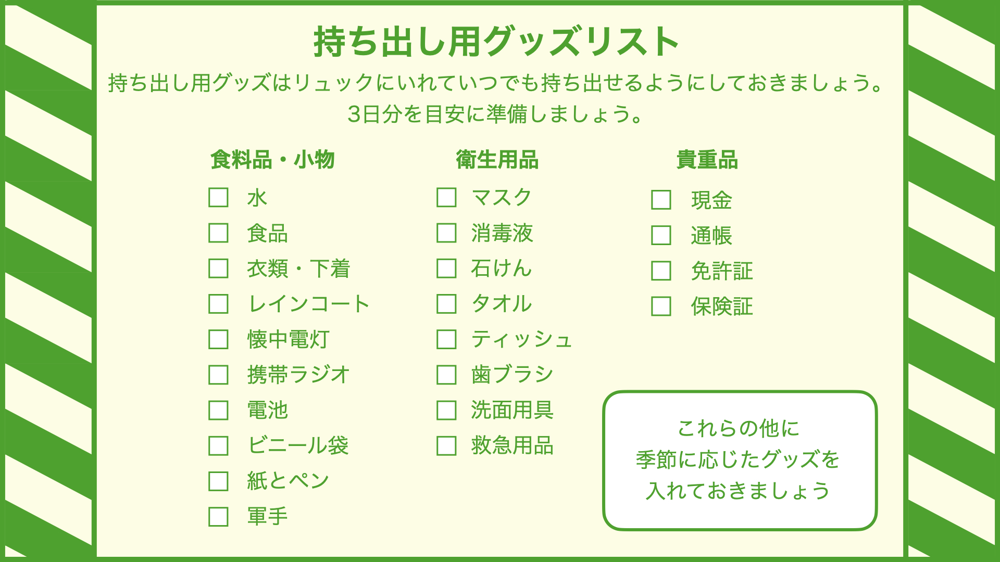
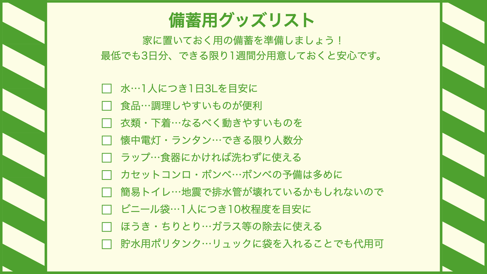

防災グッズチェックリスト
大規模な災害が起こると一時的に物資の調達がなくなってしまうため、
自ら準備した備蓄が重要になってきます。防災グッズチェックリストでいざという時の準備をしましょう。
持ち出し用グッズリスト
 持ち出し用グッズリストを保存する
備蓄用グッズリスト
 備蓄用グッズリストを保存する
「自分に必要なもの」を考える
上記のリストはあくまで誰もが必要になるものを載せています。これらの備えの他に、自分に必要なものを準備しておきましょう。 例えば、病気を患っているなら薬、ペットを飼っているならペットフードなどが必要になります。備蓄をする際は自分や家族に何が必要になるかよく考えながら準備しましょう。